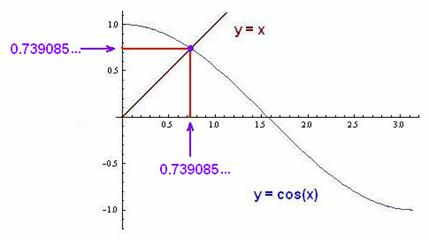

Don and his students Jay, Chris, and
Elizabeth find a new number- the Dottie number 1
by Don Cohen
It all started like this: Jay, a 10th grader, put the following into a TI-84 Plus calculator: cos(cos(cos(2/5)))= 0.9998477415. Don's first reaction was hmmmm, that's interesting. And that started Don working very hard on what was happening. Don and Jay starting looking at results in radians and degrees.
On
the TI-84 Plus, in degree mode:
cos(2/5)
= 0.9999756307
cos(cos(2/5))
= 0.9998477026
cos(cos(cos(2/5)))
= 0.9998477415
In Mathematica
when Don put in N[Cos[Cos[Cos[2/5]]],10] he got 0.8225159256,
not 0.9998477415
as above. Later, Chris,
another of Don's students, said we should use the Degree as below, then the
outputs agreed.
In
Mathematica in
degree mode:
N[Cos[2/5
Degree],10] =
0.9999756307
N[Cos[Cos[2/5
Degree] Degree],10] =
0.9998477026
N[Cos[Cos[Cos[2/5
Degree] Degree] Degree],10]
= 0.9998477415
On
a TI-84 Plus, in radian mode:
cos
(2/5) = 0.9210609940
cos
(cos (2/5)) = 0.6049756873
cos
(cos (cos (2/5))) = 0.8225159256
In
Mathematica (angle in radians):
N[Cos[2/5],10]
=
0.9210609940
N[Cos[Cos[2/5]],10]=
0.6049756873
N[Cos[Cos[Cos[2/5]]],10]=
0.8225159256
In
Derive (angle in radians):
COS(2/5) = 0.921060994
COS(COS(2/5)) = 0.6049756872
COS(COS(COS(2/5))) = 0.8225159256
So finally, there was agreement using the calculator and 2 computer programs, as there should be, and different answers between radians and degrees as there should be, because the radian is the larger unit, 1 radian ≈ 57'
Don even tried the following in Mathematica
N[Cos[Cos[Cos[Cos[Cos[Cos[Cos[Cos[Cos[Cos[Cos[Cos[Cos[Cos[Cos[
Cos[2/5]]]]]]]]]]]]]]]],10], to get 0.7385837973
An example of iterating a function:
Don
realized this is a sequence of iterations,
also called feedback, which he used in Chapter 8 in
his Calculus books to solve a quadratic equation
x2 ' 5x +6 = 0
} add 5x and -6 to both sides
x2 = 5x - 6
} divide both sides by x
x
= 5 ' 6/x
Now we're going to get an infinite sequence by iterating the function 5 ' 6/x. If we put 4, say, in for x we get
5 ' 6/4 = 5 ' 1 ' = 3 '
So our sequence starts with 4, 3 ',
The
we'll put the output 3 ' in for x (feeback),
to get 5
' 6/(3 ')
= 5 ' 6/(7/2) = 5 ' 12/7 = 5 - 1 5/7 =
3 2/7. Our sequence now looks like this: 4,
3 ', 3 2/7,
Now
take the output 3 2/7 and put that in for x
in 5 ' 6/(3
2/7)
and so on. Using
a calculator one can do this easily by doing 5-6/ANS
every time after putting in 4
to begin with. This infinite sequence approaches 3 as the limit,
which is one of the roots of the original quadratic equation!
In Mathematica
Don found the command NestList will do the same thing as above, so we define the
function, 5
' 6/x ,
f[x_]:=5 ' 6/x
then
use the command Nestlist
Nestlist[f,4,2]
which says start with 4 in for x in the function, and do 2 iterations to get {4,7/2,23/7}
To
get decimals to 10 digits, use
N[Nestlist[f,4,2],10]
{4.000000000,
3.500000000, 3.285714286}
Don
needed to see what was happening with iterating cos(x), so he figured out
how to make a graph with the
commands below:
f[x_]:=Cos[x]
N[Nestlist[f,2/5,40],10]
{0.4000000000, 0.9210609940,0.6049756873, 0.8225159256, 0.6803795416,
0.7773340097, 0.7127859455, 0.7565429620, 0.7272133023, 0.7470298706,
0.7337101939, 0.7426950635, 0.7366486303, 0.7407241955, 0.7379800489,
0.7398290799, 0.7385837973, 0.7394227462, 0.7388576709, 0.7392383354,
0.7389819257, 0.7391546511, 0.7390383033, 0.7391166776, 0.7390638842,
0.7390994466,0.7390754914,0.7390916280,0.7390807582,0.7390880802,
0.7390831481, 0.7390864704, 0.7390842324, 0.7390857400, 0.7390847245,
0.7390854085, 0.7390849478, 0.7390852581, 0.7390850491, 0.7390851899,
0.7390850950}
ListLinePlot[%,PlotRange'{.3,.95}] ; PlotRange tells the computer to go from
.3 to .95 on the y-axis; the resultant graph of the 40 iterations is:
Don decided he didn't want to see all the output numbers, when he did many iterations, like 200 in the examples below, then only look at the last one.
To do this in the examples below, Don used the Take command.
f[x_]:=Cos[x]
-defines the function f = cos[x]
Take[N[NestList[f,2/5,200],10],-1]
says start with 2/5 in for x in the function f, do 200 iterations, get
the outputs to10 decimal digits, then show us only the last output number with Take
and -1.
(Remember the starting number is in radians, except where it says Degree).
So here we go with different starting numbers in red:
f[x_]:=Cos[x]
Take[N[NestList[f,2/5,200],10],-1]
{0.7390851332}
f[x_]:=Cos[x]
Take[N[NestList[f,45*(Pi/180),200],10],-1]
{0.7390851332}
f[x_]:=Cos[x]
Take[N[NestList[f,4*(Pi/180),200],10],-1]
{0.7390851332}
f[x_]:=Cos[x]l
Take[N[NestList[f,(2/5)
Degree,200],10],-1]
{0.7390851332}
f[x_]:=Cos[x]
Take[N[NestList[f,Pi/4,200],10],-1]
{0.7390851332}
f[x_]:=Cos[x]
Take[N[NestList[f,0,200],10],-1]
{0.7390851332}
f[x_]:=Cos[x]
Take[N[NestList[f,Pi/2,200],10],-1]
{0.7390851332}
f[x_]:=Cos[x]
Take[N[NestList[f,-500 Degree,200],10],-1]
{0.7390851332}
f[x_]:=Cos[x]
Take[N[NestList[f,.001,1000],10],-1
{0.739085}
So
no matter what number you start with, you get the same answer for the
limit of the infinite sequence, and
that is 0.7390851332'
On
On
cos(0.7390851332) =
0.7390851332
Wow,
it works!!!
The
graph Don made below, is in
Eric Weisstein's World of Mathematics
under: Dottie number.
The
point of intersection of y = cos(x)
and y=x, gives this number,
0.739085' the unique solution of the equation x=cos(x).

Great
work Jay (who started the whole thing and took the giant step of
googleing 0.7390851332), and Chris (who straightened out Don with how
to write the degrees), and Elizabeth (who thought of finding the
cos
(0.7390851332) and got 0.7390851332 on her calculator)!
What other questions can you ask now?
1 This number was named by Samuel
R. Kaplan in 2007
To
other discoveries
To order Don's materials
Mathman home